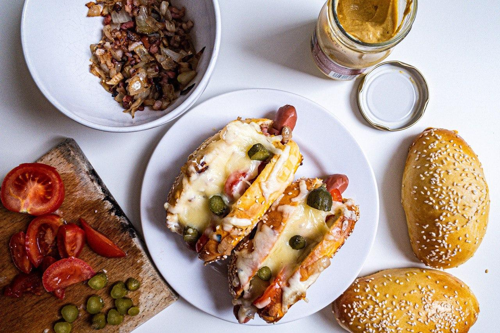

Szendvicsek

Rukkololás tojásos szendvics
Elkészítés: 12 perc
EGYSZERŰ
Ebbe minden van ami jó. Rukkola, paradicsom, tükörtojás, olivabogyó na meg persze sok sok sonka.
Recept

Mindent bele hot dog
Elkészítés: 60 perc
KÖZEPES
Nem gondolod, hogy sokkal finomabb valami ha te csinálod otthon? Pontosan ezért elhoztam nektek egy atom jó kifli és hotdog receptet.
Recept
Szalonnás rukkolás szendvics
Elkészítés: 12 perc
EGYSZERŰ
Huuuh szendvics rajongók ezt ki kell próbálnotok!
Recept
Áfonyás camembertes toast
Elkészítés: 8 perc
EGYSZERŰ
Mindenki tudja, hogy a camembert és az áfonya gyilkos páros. Miért ne csinálhatnál belőle egy király szendvicset.
Recept